Qu'est-ce qu'un retcon ?
Dragon Ball et l'art de construire un univers en marchant
Il y a deux façons de lire Dragon Ball. La première ne voit qu'un plan. La seconde voit le tisserand au travail.
Il y a deux façons de lire Dragon Ball.
La première est celle de l'enfance — ou de la première lecture, quel que soit l'âge. C'est le premier cercle. Celui où tout coule de source, où chaque révélation semble avoir été prévue depuis le début, où l'univers se déploie comme un plan qui était là, caché, attendant son heure. Goku est un Saiyan ? Bien sûr — sa queue, sa force, sa transformation en singe géant, tout était là. On n'avait pas vu, c'est tout.
La deuxième est celle du deuxième cercle. Celle où l'on voit les fils, les nœuds, les reprises. Où l'on comprend que non, Toriyama n'avait pas tout prévu — qu'il improvisait à la semaine, qu'il inventait ses connexions après coup, et que ce qui ressemble à un plan n'est qu'un magnifique tissu de retcons.
Un retcon — retroactive continuity — c'est quand un auteur modifie rétroactivement le sens d'un élément ancien de son récit. Ce n'est pas (forcément) une erreur. Ce n'est pas (forcément) un aveu de faiblesse. C'est un outil de construction — et Dragon Ball est le terrain idéal pour comprendre comment il fonctionne, pourquoi il fonctionne, et quand il fabrique quelque chose de plus grand que ce qu'un plan aurait produit.
Cet article est une invitation à entrer dans le deuxième cercle. Pas pour abîmer le premier — il restera intact, disponible à chaque relecture. Mais pour en gagner un deuxième. Celui de la construction. Celui du tisserand au travail.
Et je vous promets que le voyage en vaut la peine.
1. Le retcon est une déduction
Avant de chercher des retcons dans Dragon Ball, il faut s'entendre sur la méthode. Un retcon ne se décrète pas au doigt mouillé, et il ne se réduit pas non plus à un aveu d'auteur en interview. C'est une conclusion qui se déduit — et la logique qui y mène est d'une simplicité désarmante.
Quand une connexion narrative apparaît entre deux éléments séparés par plusieurs tomes, deux hypothèses s'offrent à nous, et deux seulement. Soit c'est une révélation : l'auteur avait cette connexion en tête depuis le début et la dévoile au moment choisi. Soit c'est un retcon : l'auteur invente la connexion plus tard et la greffe rétroactivement sur un élément ancien. Il n'y a pas de troisième option.
Pour trancher, il suffit d'examiner les conditions de production.
En 1984, Akira Toriyama commence Dragon Ball comme une parodie loufoque du Saiyūki, le Voyage en Occident chinois. Le ton est comique, l'univers est un conte, l'ambition est modeste. Les deux premiers tomes forment un récit bouclé : un garçon à queue de singe cherche des boules magiques avec une fille capricieuse, les trouve, fin. Dragon Ball aurait pu — aurait dû — s'arrêter là.
C'est Kazuhiko Torishima, son éditeur au Weekly Shōnen Jump, qui réoriente le manga vers les arts martiaux. Le premier Tenka'ichi Budōkai naît de cette impulsion éditoriale, pas d'un plan de l'auteur. Toriyama ne planifiait jamais au-delà de quelques chapitres. Il dessinait au rythme de la publication hebdomadaire, chaque semaine apportant son lot d'improvisations.
Ces faits ne sont pas contestés. Ils sont documentés par des décennies d'interviews, confirmés par Torishima lui-même, et surtout — c'est le point crucial — ils sont lisibles dans le texte. On n'a même pas besoin que Toriyama l'avoue. Les conditions de production suffisent.
Prenons le Nyoibō, le bâton magique de Goku. Au tome 1, c'est un accessoire de Saiyūki — Sun Wukong possède le même. Il s'allonge, c'est amusant, c'est un gag. Au tome 14, on apprend que ce bâton est en réalité le pilier sacré qui relie la tour Karine au Palais de Dieu, et que le grand-père Gohan l'avait retiré parce que personne n'avait le niveau d'atteindre le sanctuaire.
La question se pose : révélation ou retcon ?
Pour que ce soit une révélation, il faudrait accepter que Toriyama, en 1984, en dessinant un gag manga qu'il ne pensait pas prolonger au-delà de deux tomes, avait déjà conçu dans sa tête la tour Karine, le Palais de Dieu, la hiérarchie cosmique terre-tour-palais, le personnage du Tout-Puissant, et le rôle du bâton comme pilier sacré. Qu'il a gardé ce plan secret pendant quatre ans de publication hebdomadaire, sans jamais le laisser transparaître. Et qu'il a fait tout cela dans un format qu'il improvisait à la semaine.
C'est absurde. Ce n'est pas une opinion, c'est un raisonnement par l'absurde. Soit on accepte un scénario structurellement impossible — un plan de 14 tomes dans la tête d'un auteur qui comptait en faire 2 — soit on reconnaît l'évidence : le bâton n'avait aucun sens caché au tome 1. Le sens est venu après. C'est un retcon. Et un magnifique.
Le même raisonnement s'applique à chacun des exemples que nous allons examiner. À chaque fois, la même déduction : l'explication tardive ne peut pas avoir été planifiée, donc elle a été inventée après coup. Les interviews de Toriyama ne font que confirmer ce que la déduction établit seule — elles verrouillent le raisonnement, sans plus.
C'est cette méthode — déduction d'abord, vérification ensuite — qui distingue l'analyse du bavardage de fan.
Mais il faut être rigoureux, et la rigueur impose de reconnaître qu'on ne peut pas toujours trancher. C'est pourquoi notre méthode distingue trois niveaux de certitude :
Prouvable par le texte lui-même. Quand Tao Pai Pai reçoit un Kamehameha au tome 6 sans le reconnaître, alors qu'il sera plus tard révélé comme le frère de Tsuru Sennin, le rival de toute une vie de Kamé Sennin — le texte lui-même est incompatible avec la préméditation. Si Toriyama avait su, la scène serait écrite autrement.
Déduit des conditions de production. Quand Goku révèle que sa queue est un point faible quelques chapitres après que Bulma a simplement tiré dessus dans un bain sans aucune mention de perte de force — la probabilité est forte que Toriyama vient d'inventer cette mécanique pour donner un avantage à Yamcha, mais on ne peut pas l'exclure formellement.
Quand ni le texte ni les conditions de production ne permettent de trancher. Quand Karin révèle que Kamé Sennin a grimpé la tour il y a 300 ans, la connexion est tellement naturelle que Toriyama a pu la prévoir un arc à l'avance — ou l'inventer sur le moment. On ne sait pas, et la rigueur consiste à le dire.
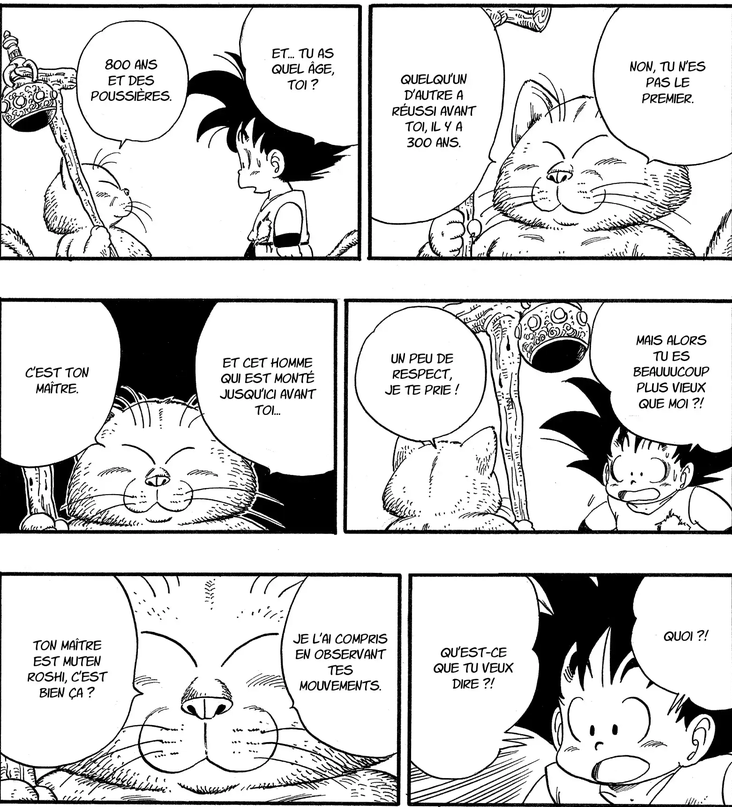
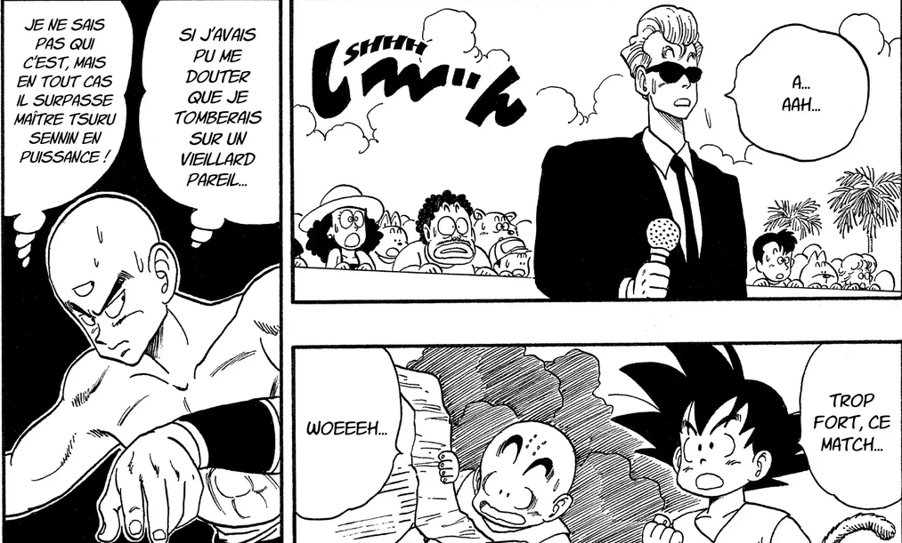
L'indécidable (les 300 ans de Kamé Sennin) et le premier nom lâché en passant — Tsuru Sennin, qui deviendra crucial
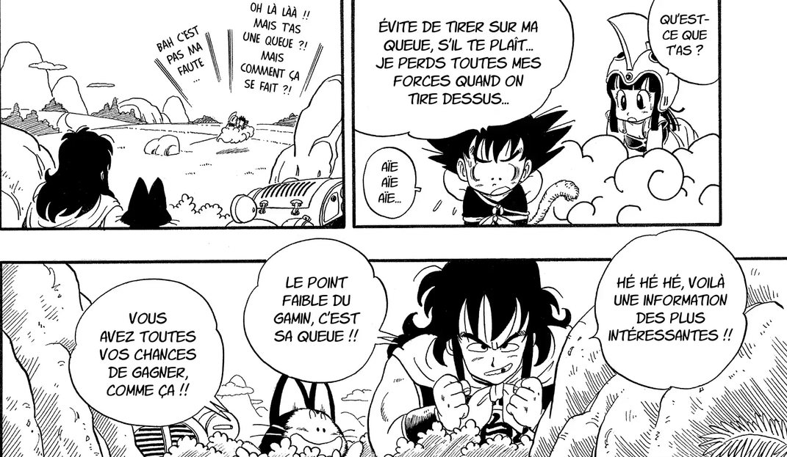
Le point faible de la queue, révélé en direct — l'exemple même du retcon probable
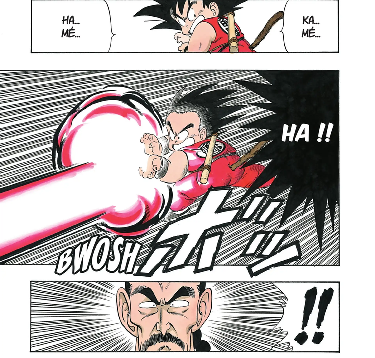
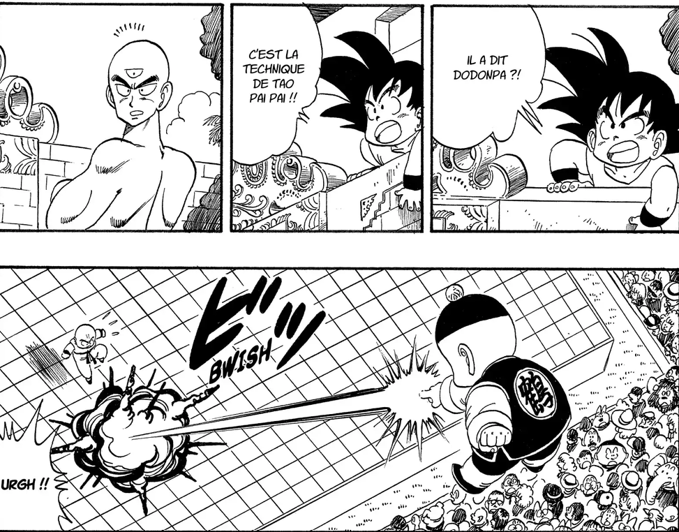
Vol. 6 p.175 — l'oubli · Vol. 9 p.15 — le rappel
Ces deux pages, mises côte à côte, forment un diptyque dévastateur. La première prouve l'absence de connexion ; la seconde montre la connexion en train de se nouer, trois tomes plus tard. L'avant et l'après du retcon, par la même technique, vue des deux côtés.
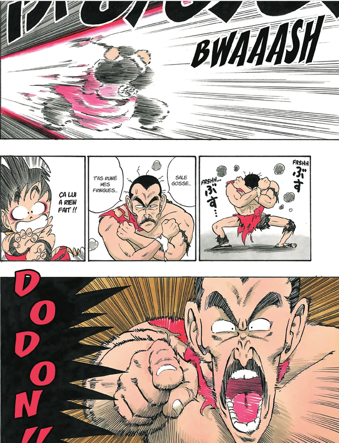
La technique ultime du tome 2 ne fait même pas ciller l'adversaire du tome 6
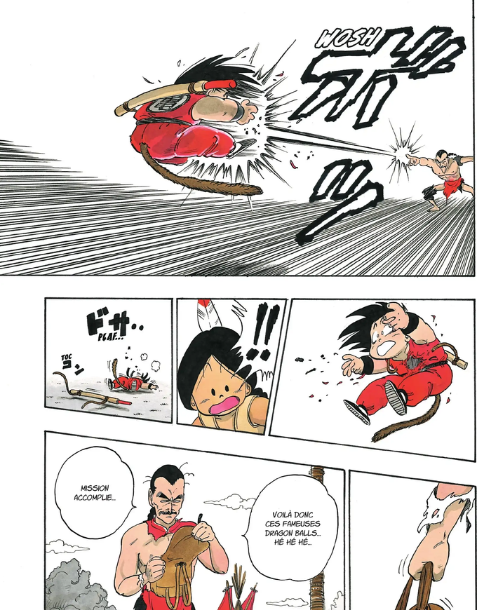
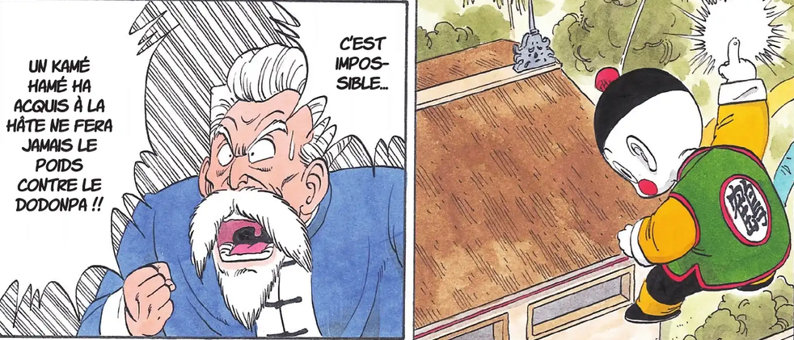
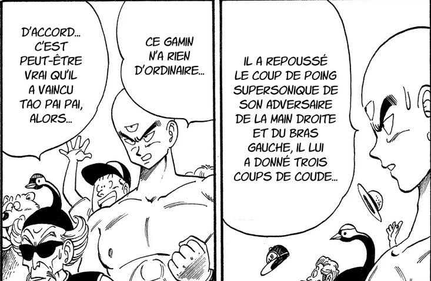
Même Kamé Sennin doute — jusqu'à ce que le nom de Tao Pai Pai refasse surface
2. La grande conversion : du gag manga au récit sérieux
Dragon Ball ne bascule pas du comique au sérieux en un seul moment. La transition est progressive, et c'est précisément cette progressivité qui permet aux retcons de tissage de s'opérer sans que le lecteur ne voie la couture.
Le point de bascule le plus visible est l'entraînement chez Kamé Sennin. Dans une seule page, les deux registres coexistent : le cartouche narrateur annonce solennellement « des exercices extrêmement durs », pendant que Kamé Sennin se fait poursuivre par un requin sur la plage en criant « Qu'est-ce que tu me veux, salopard ?! ». Le gag n'a pas disparu, mais le moteur de l'histoire a changé. On ne cherche plus des boules magiques pour un vœu comique. On s'entraîne pour devenir plus fort. La curiosité du lecteur a muté : il veut voir les progrès.
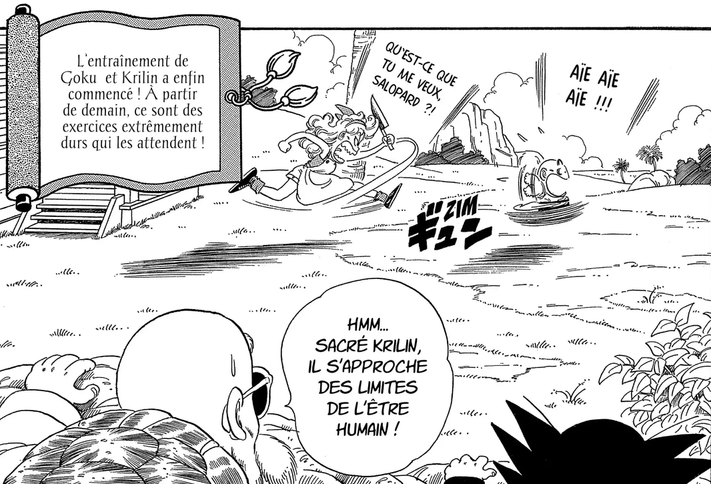
Les deux registres, dans la même page
Et la phrase que Kamé Sennin prononce sur Krilin, dans cette même scène, est un bijou involontaire : « Sacré Krilin, il s'approche des limites de l'être humain ! » Remarque banale dans ce contexte — un maître impressionné par son élève. Mais quand on sait que Goku, lui, n'est pas un être humain (dix tomes plus tard), cette phrase se charge d'un sens qu'elle n'avait pas. Le plafond de Krilin sera réel ; celui de Goku, non. Cette asymétrie deviendra le sujet central de Dragon Ball Z. Mais ici, en 1985, c'est juste le compliment d'un vieux maître.
C'est ce que nous appelons une fausse prophétie — un terme sur lequel nous reviendrons. Une phrase qui n'annonce rien au moment de l'écriture, mais qu'un retcon futur transforme en signe avant-coureur.
3. Le tissage progressif — cas d'école : le Kinto'un
Le Kinto'un est l'exemple le plus documentable de tissage progressif dans Dragon Ball, parce que sa transformation s'opère en étapes distinctes, chacune séparée par plusieurs tomes, et chacune traçable à la page près.
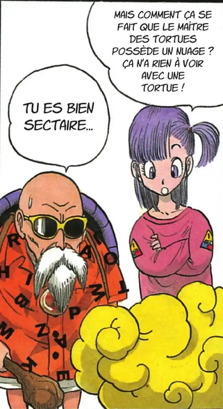
La question que Bulma pose sans le savoir — et que tout le chapitre va mettre des tomes à résoudre
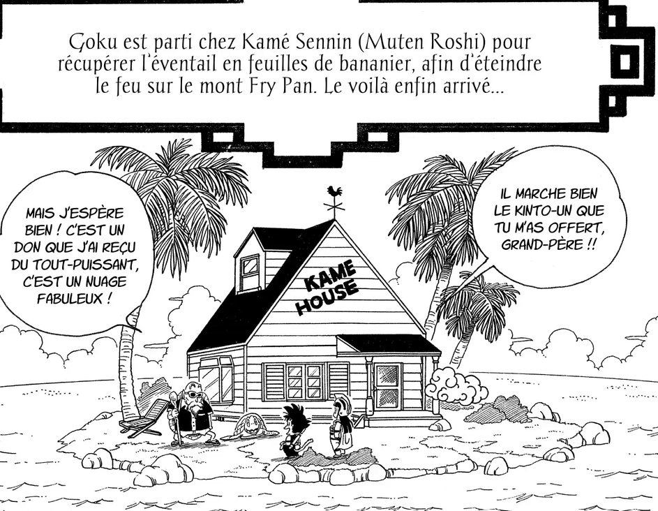
Tome 1 — le cadeau comique, avant que le Tout-Puissant n'existe comme personnage
Kamé Sennin donne un petit nuage à Goku. C'est un clin d'œil au Saiyūki — le nuage volant de Sun Wukong. Kamé Sennin précise qu'il l'a « reçu du Tout-Puissant » — une expression vague, du registre du conte, qui n'a pas plus de poids que « un vieux monsieur me l'a donné ». Le Tout-Puissant, à ce stade, n'existe pas comme personnage.
Karin lâche une information passante : « Il y en avait plein, quand j'étais jeune. » Et, surtout : « Un Kinto'un ne peut pas disparaître ! » Le nuage unique devient un exemplaire parmi d'autres. Les Kinto'un sont un phénomène — rare, mais naturel. C'est un enrichissement discret qui ne contredit rien.
Au sommet de la tour Karine, le parc à nuages. « Découpes-en un de la grandeur que tu veux. » Karin ajoute : « C'est moi qui lui avais donné, il y a bien longtemps de cela. » Et Goku fait la connexion : « Mais alors, le Kinto'un que m'avait offert grand-père Kamé Sennin... »
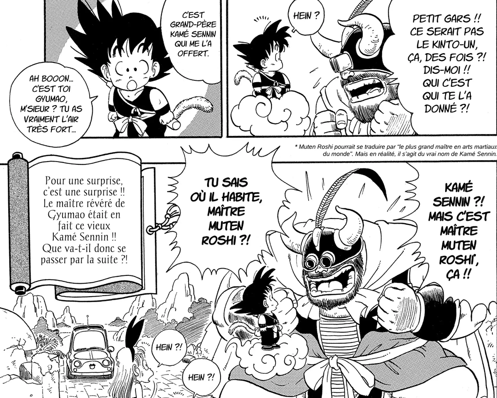
Une lignée qui se noue des tomes avant qu'on en comprenne le motif
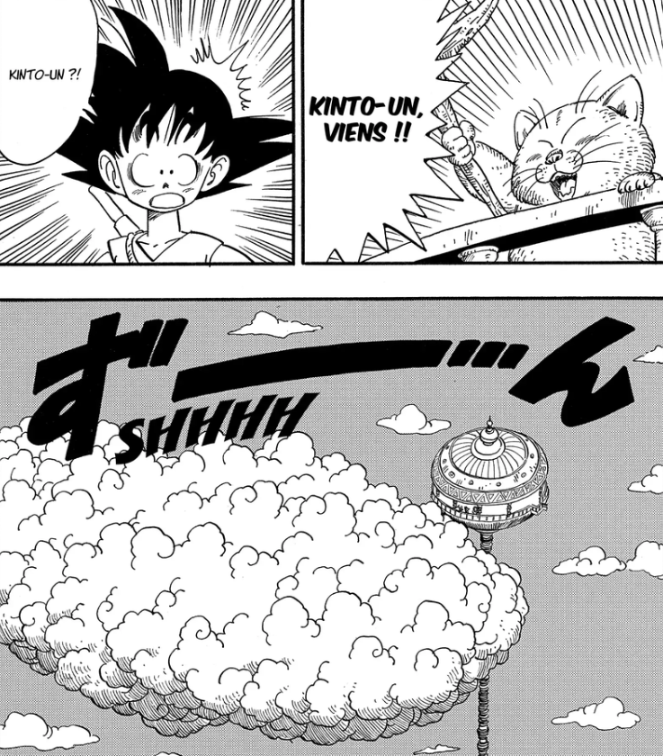

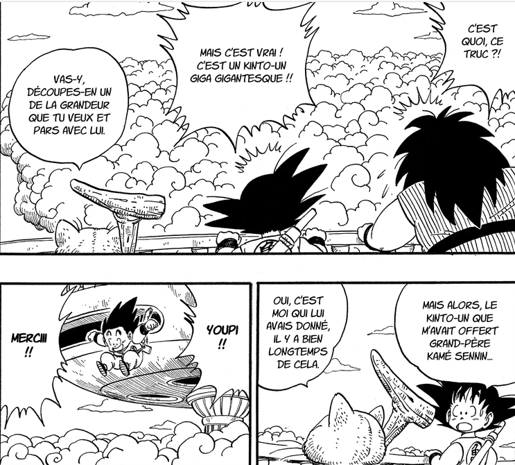
La boucle se referme. L'expression vague du tome 1 — « reçu du Tout-Puissant » — peut maintenant être lue comme un indice de cette chaîne. Karin a donné un nuage à Kamé Sennin qui l'a donné à Gohan qui l'a donné à Goku. Une lignée se dessine à travers le nuage. Chaque intermédiaire a jugé le suivant digne de le posséder.
Notons ce qui rend ce tissage parfait : aucune des trois étapes ne contredit les précédentes. L'étape 2 enrichit l'étape 1 sans la nier. L'étape 3 boucle avec l'étape 1 en passant par l'étape 2. Le résultat est un univers qui semble avoir toujours été cohérent — la marque du tissage réussi.
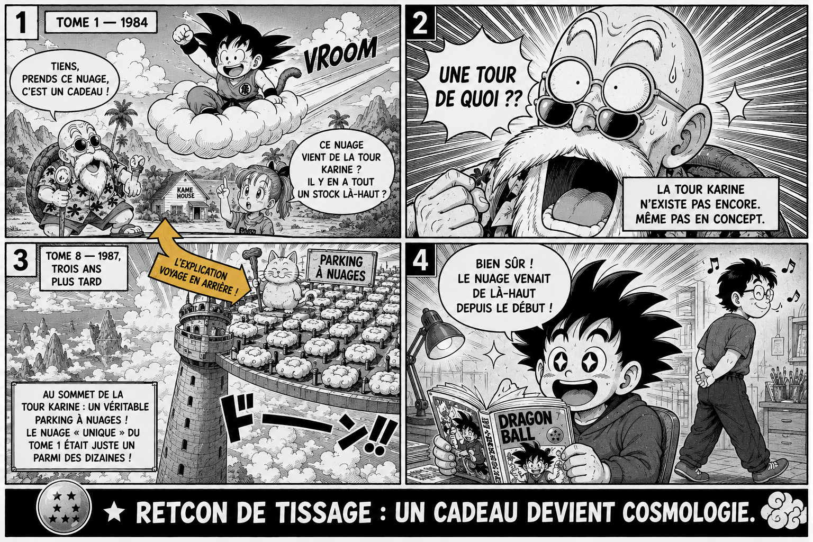
Retcon de tissage : un cadeau devient cosmologie
4. Le tissage progressif — cas d'école : le Nyoibō
Si le Kinto'un est l'exemple du tissage parfait, le Nyoibō en est la version radicale — celle où le retcon est certain, prouvable, et pourtant invisible au premier cercle de lecture.
Au tome 1, le Nyoibō est un bâton extensible hérité du grand-père Gohan. Référence directe au Saiyūki. Il s'allonge, il frappe, c'est un gag. Rien d'autre.
Au tome 6, apparaît la tour Karine (p. 164) — un édifice qui « se dresse jusqu'aux cieux ». Bora, le gardien au pied de la tour, prévient : « Nous nous transmettons cette légende de génération en génération... peut-être une superstition. » Au sommet, Karin, le chat immortel.
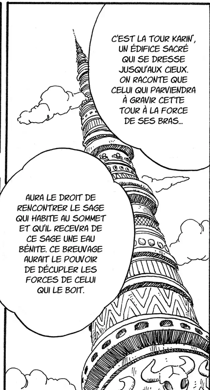
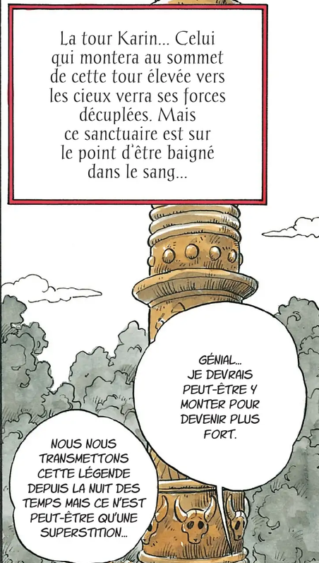
La légende, racontée avant même qu'elle ne serve à quoi que ce soit
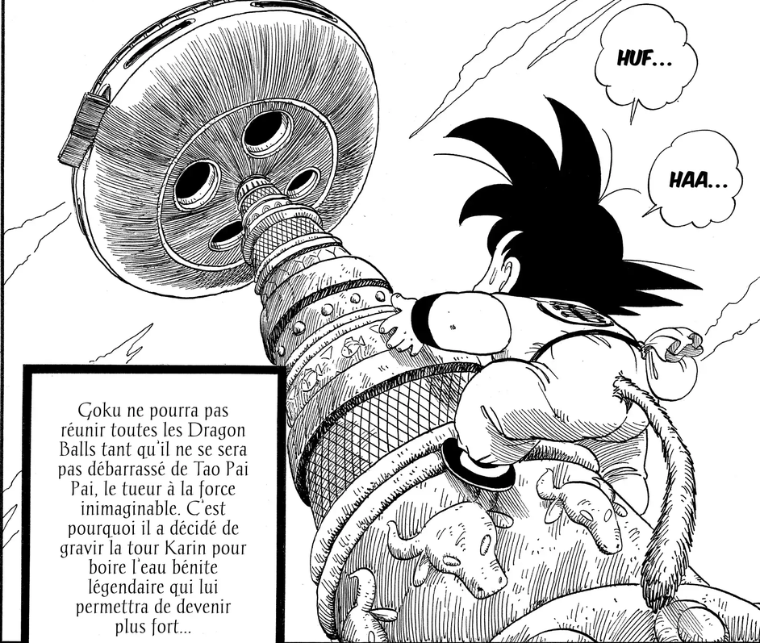
Au pied de la tour, Bora le gardien reconnaît le bâton de Goku avant même que quiconque ait gravi une seule marche — et sa réaction en dit long sur ce que le Nyoibō représentait déjà, en coulisse, pour un lecteur qui n'y voyait qu'un gag.
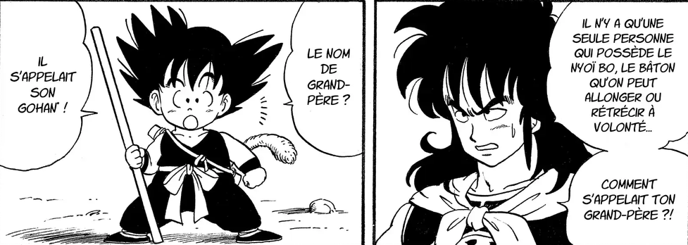
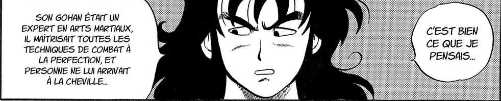
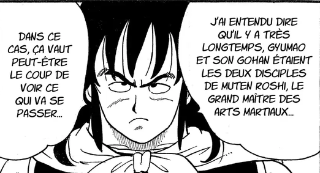
La même lignée, le même maître — Kamé Sennin a formé Gyumao et grand-père Gohan bien avant Goku
L'important ici, c'est ce qui n'est pas dit. La tour est un cul-de-sac vertical. Il n'y a rien au-dessus. Karin est le sommet. Et Karin porte le titre de « Dieu des arts martiaux » (tome 7, p. 20) — un titre divin, pas celui d'un gardien intermédiaire. Aucune mention d'un palais au-dessus, d'un Tout-Puissant réel, d'une connexion entre le bâton et la tour.
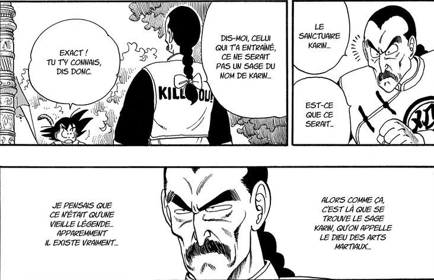
Même le tueur le plus redoutable de l'arc n'avait jamais entendu parler de Karin — la preuve que ce sanctuaire vient d'apparaître dans l'univers

Puis vient l'arc Piccolo Daimaō, et le besoin narratif de créer un palier au-dessus de Karin. Toriyama invente le Tout-Puissant. Et c'est à ce moment que Karin — en direct, devant nous — « se souvient » que le bâton de Goku a un autre usage : « À l'origine, c'est un bâton qui relie notre monde au sanctuaire. » Et Goku : « Mon Nyoibō ?! »

Le bâton magique est devenu le pilier sacré. L'accessoire du Saiyūki est devenu un élément fondamental de la cosmologie. Et le lecteur du premier cercle ne voit rien, parce que le « comme si » de Karin est parfait — il se souvient, il ne découvre pas, donc la fiction d'un plan de l'auteur est maintenue.
Mais le titre « Dieu des arts martiaux » prouve que le plan n'existait pas. Si Toriyama avait le Tout-Puissant en tête quand il dessinait Karin, il ne lui aurait jamais donné un titre divin — parce que ce titre occupe une place que quelqu'un d'autre doit occuper. Karin devait être le sommet. Il a cessé de l'être.
C'est un retcon par absorption : l'ancien statut est dépassé, pas contredit. Karin n'est pas rétrogradé explicitement. Son titre disparaît simplement, absorbé par l'existence d'un être supérieur.
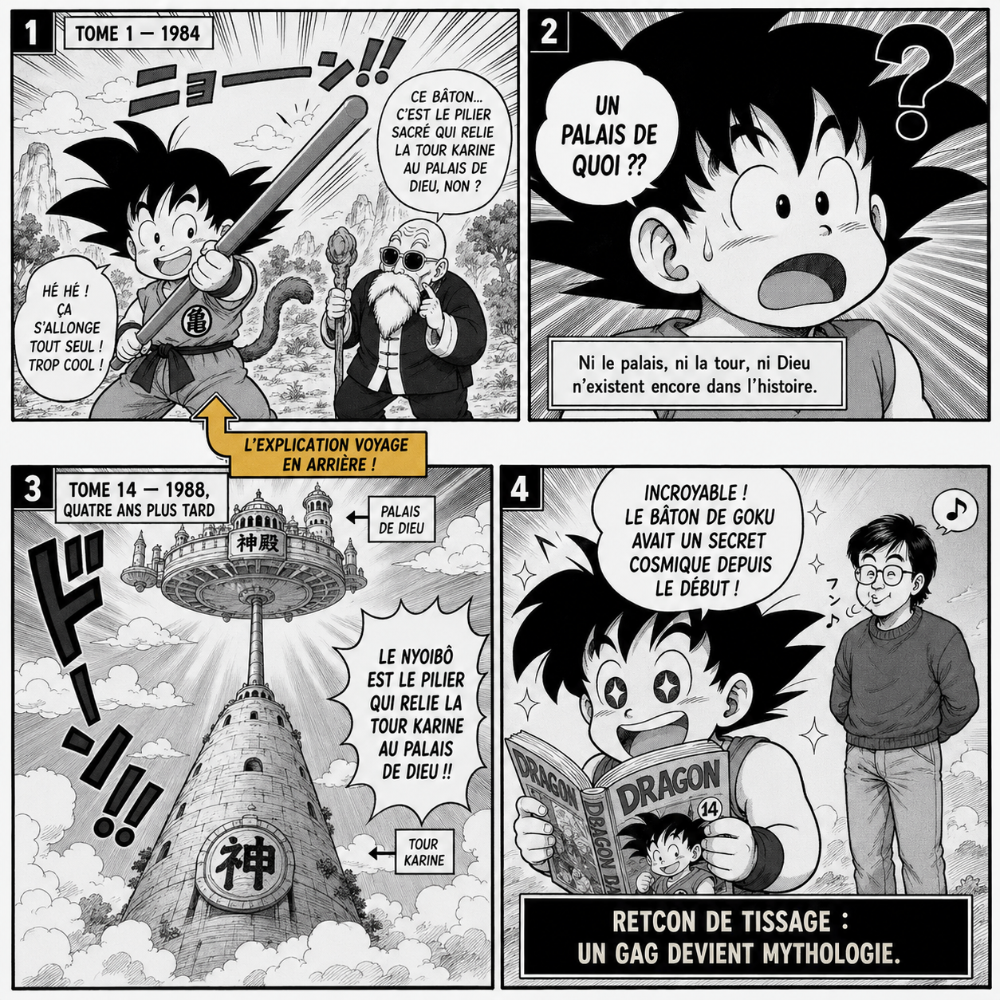
Retcon de tissage : un gag devient mythologie
5. Les fausses prophéties
Parmi les effets les plus saisissants du retcon, il y a la fausse prophétie — cette phrase innocente, écrite sans arrière-pensée, qu'un retcon futur transforme rétroactivement en signe avant-coureur.
La plus célèbre : Oolong, dans un moment de perplexité devant les pouvoirs inexplicables de Goku, lâche : « Un extraterrestre, peut-être ? » C'est un gag. Le cochon métamorphe cherche une explication comique à une bizarrerie de conte. Toriyama ne pense pas aux extraterrestres — il fait du Saiyūki. Mais dix tomes plus tard, quand Raditz débarque et que la vérité éclate, cette phrase se charge rétroactivement d'un poids prophétique qu'elle n'a jamais eu.
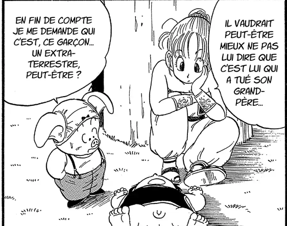
La phrase gag — et, dans la même case, le fil du grand-père qui va se refermer dix-sept tomes plus tard
La double fausse prophétie Piccolo/Goku est encore plus frappante. À la fin de Dragon Ball, Piccolo Jr. déclare : « Aucun humain ne peut se battre contre moi. » Et Goku, avec sa queue de singe, répond à un autre moment : « Je suis peut-être pas humain, moi, puisque j'ai une queue. » Deux personnages qui ne sont pas humains, face à face, et aucun des deux ne le sait. L'auteur non plus.
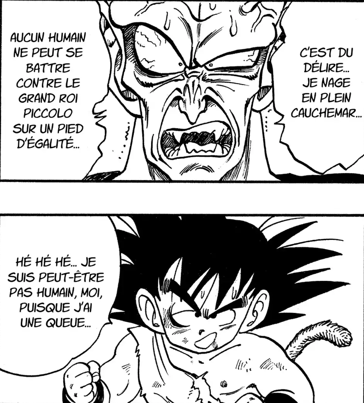
Ces phrases fonctionnent dans les deux cercles de lecture, mais de manière radicalement différente. Au premier cercle, elles ont l'air de preuves que Toriyama avait tout prévu. Au deuxième cercle, elles sont la preuve exacte du contraire — ce sont des coïncidences textuelles que le retcon réactive après coup. Le tisserand n'a rien caché. C'est le tissu qui produit le motif.
Et puis il y a le cas indécidable : le cartouche de l'auteur pendant la transformation en Ōzaru. « L'auteur lui-même n'en revient pas !!! Je n'en savais rien ! » Aveu sincère déguisé en gag ? Ou pur bris comique du quatrième mur ? On ne peut pas trancher. Mais notre méthode n'a pas besoin de cet aveu — la déduction suffit.
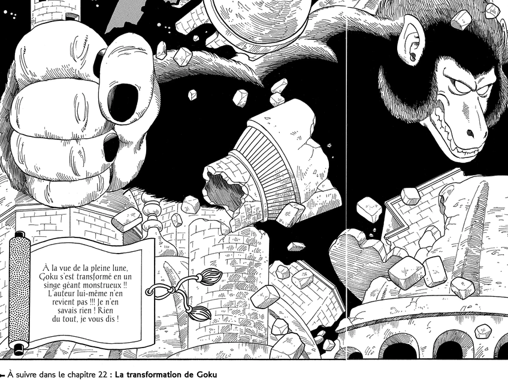
L'aveu (ou le gag) qui résume, à lui seul, toute la méthode de cet article
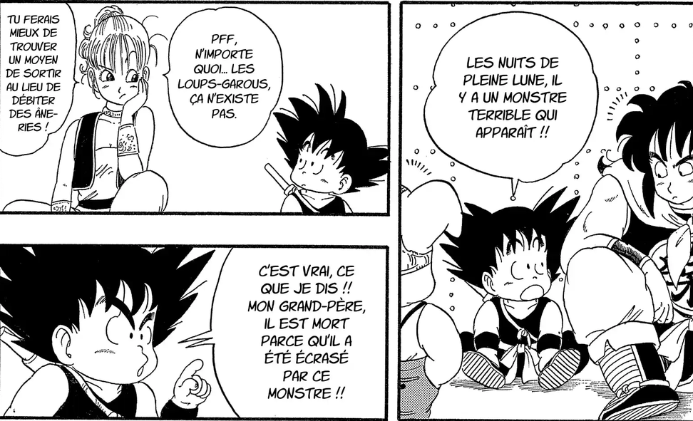
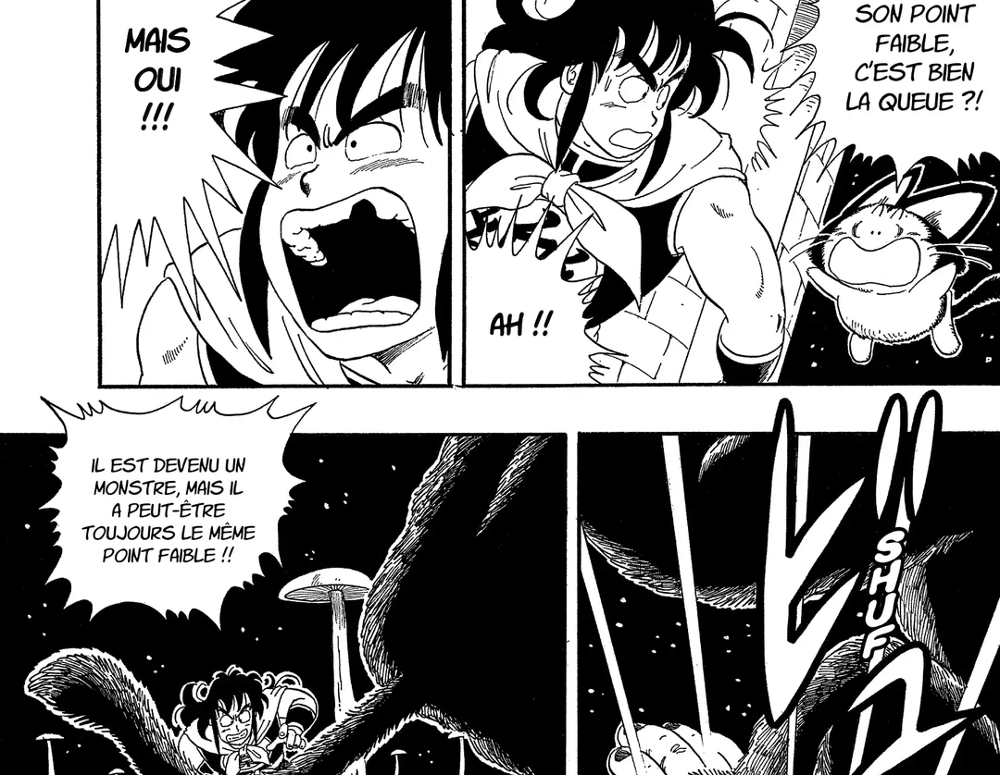
Le mystère du grand-père, posé sans réponse — et le point faible de la queue, qui refait surface sur le monstre
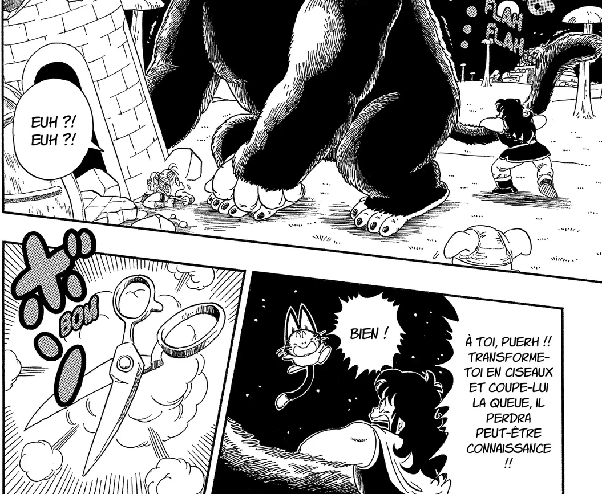
Ce grand-père écrasé par « ce monstre », ce point faible retrouvé sur un Ōzaru inconnu : deux fils posés ici sans réponse, et que le tome 17 refermera d'un seul coup.
6. Les retcons fonctionnels et fils abandonnés
Tous les retcons ne sont pas des réussites. Certains sont des ajustements mécaniques, d'autres des oublis purs. Les classifier est aussi important que célébrer les réussites.
Sa première apparition (tome 6, p. 203) le présente comme un haricot magique qui rassasie pendant dix jours. Karin le tend à Goku, qui proteste : « Un haricot ? Tu te moques de moi ?! » La fonction est claire : le Senzu nourrit. Rien d'autre.
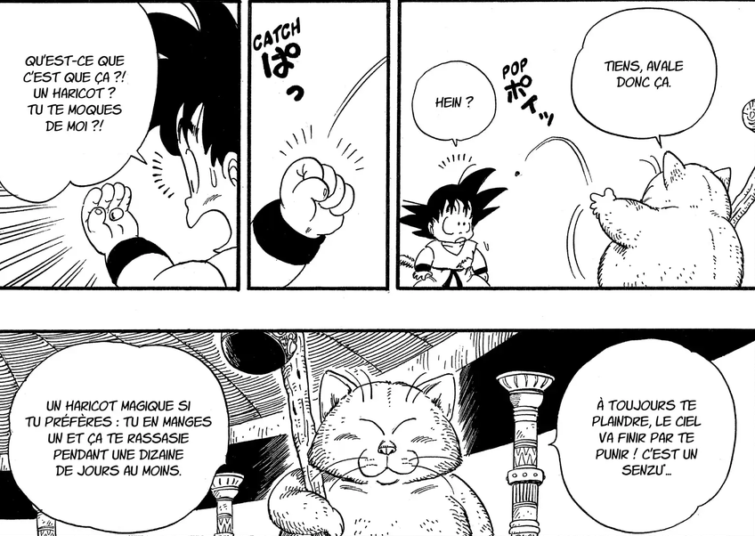

Mais dès le combat suivant, quand Goku revient blessé, le Senzu le guérit instantanément. Karin : « Ton corps est parfaitement rétabli, n'est-ce pas ? »
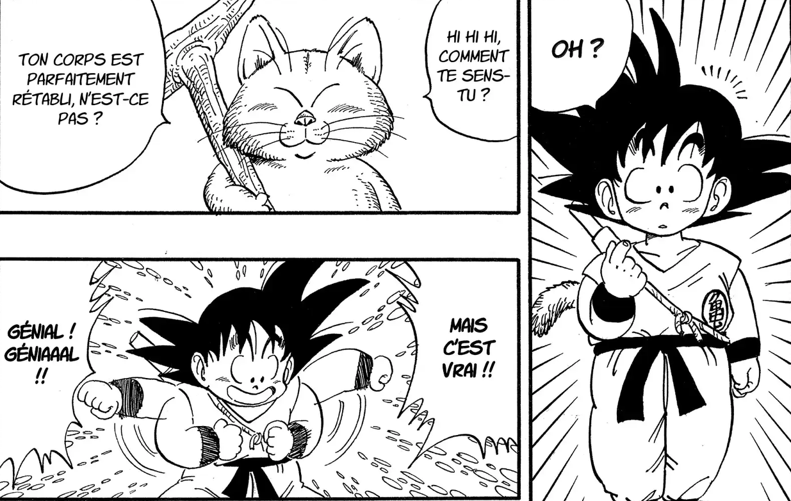
Pas d'explication du changement. Le haricot rassasiant est devenu un haricot guérisseur, silencieusement, entre deux pages.
Et les personnages le remarquent. Plus tard, Krilin demande : « Les Senzu, c'est pas que pour la faim ? » — la question du lecteur dans la bouche d'un personnage. La lampshade est posée, mais la réponse n'est jamais donnée.
Au tome 8 (p. 106), le dragon sacré apparaît et annonce : « Il n'est point de vœu que je ne puisse exaucer. » Omnipotent. Sans limite. Six mots qui auraient dû empêcher toute tension narrative future — si un dragon peut tout faire, tout est résolu d'avance. Progressivement, les limitations apparaissent. Le dragon est bridé, patch par patch, pour maintenir la tension dramatique.
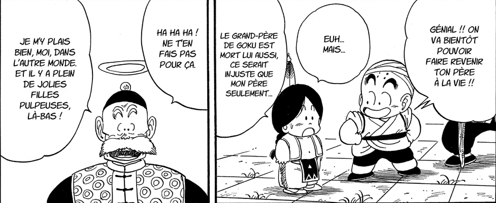
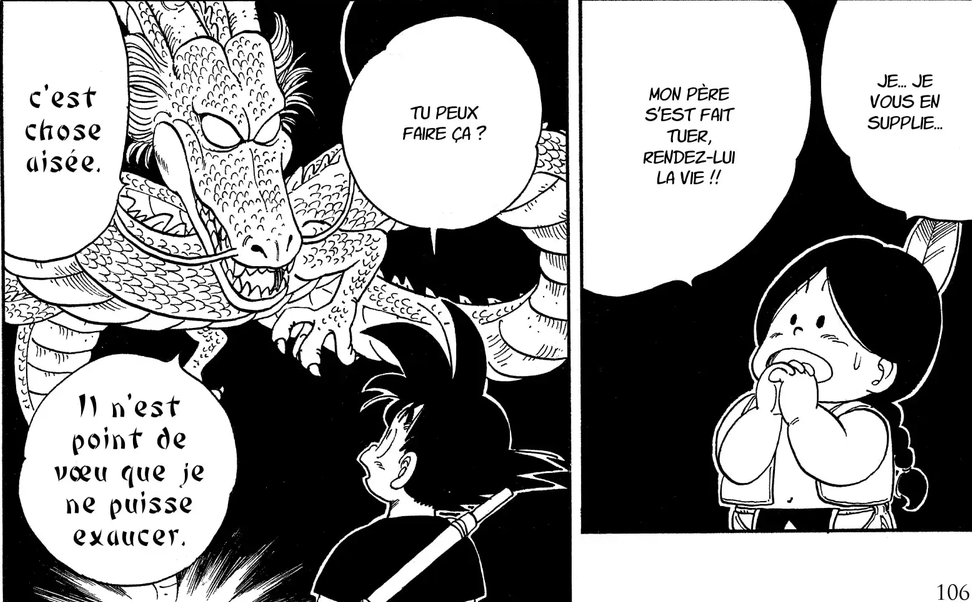
Même le grand-père de Goku, mort et jamais ressuscité, sert de point de comparaison dans cette même scène
Au tome 6 (p. 57), elle est présentée comme capable de « lire l'avenir dans sa boule de cristal ». Un pouvoir absolu de précognition, jamais contredit — simplement jamais réutilisé. Les ennemis auraient pu être anticipés, les pièges déjoués. Mais Baba disparaît du récit, et son pouvoir avec elle. Pas de retcon, pas de contradiction : une évacuation silencieuse.
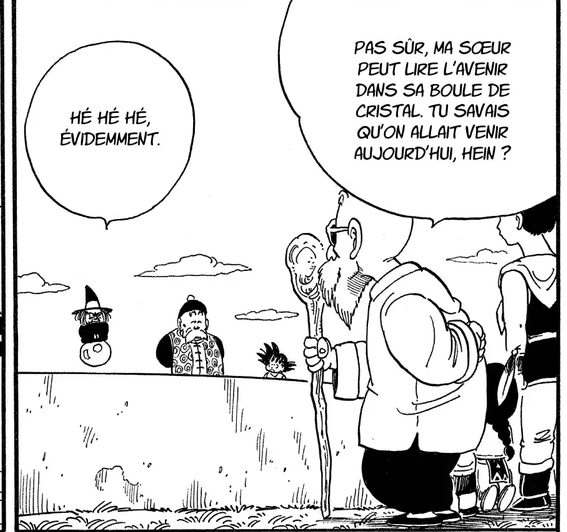
Et le Kinto'un, si magnifiquement tissé par ailleurs, n'échappe pas à l'erreur arithmétique. Au tome 5, Karin déclare : « Un Kinto'un ne peut pas disparaître ! » Quelques tomes plus tard, Tambourine pulvérise celui de Goku. La règle explicite est contredite par l'action. Ce n'est pas un changement de registre, pas un enrichissement — c'est un oubli.
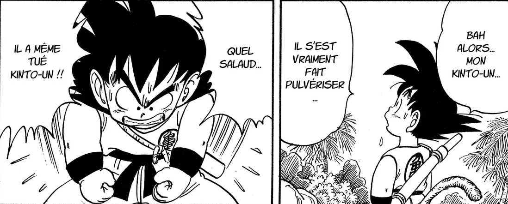
7. La machine à réparer : Kami-sama
Si un seul personnage incarne le rôle du retcon dans Dragon Ball, c'est Kami-sama, le Tout-Puissant. Sa création même est un retcon — rien dans les tomes précédents ne suggère son existence (le titre de « Dieu des arts martiaux » de Karin le prouve). Mais sa fonction va bien au-delà : Kami-sama est la machine à réparer le passage du registre comique au registre sérieux.
Comment Toriyama en arrive-t-il à le créer ? Par un enchaînement de besoins narratifs. Piccolo Daimaō est mort, mais ses victimes ont des « âmes qui ne trouvent pas le repos ». Pour les libérer, il faut un pouvoir supérieur à Piccolo. Pour qu'un pouvoir supérieur existe, il faut un palier au-dessus de Karin. Pour atteindre ce palier, il faut une raison d'y monter. Et Karin — en direct, devant nous — « se souvient » : le bâton de Goku relie la tour au sanctuaire.

Mais une fois Kami-sama créé, Toriyama s'en sert pour bien plus que relancer l'arc. Il en fait la machine à réparer le registre comique. En l'espace de quelques chapitres, Kami-sama résout tous les problèmes laissés en suspens par le passage du gag au sérieux.
La Lune, détruite par un Kamehameha de Kamé Sennin dans un excès comique, puis revenue sans explication ? Kami-sama « voulait restaurer la Lune ». La queue de singe de Goku, qui risquait de le transformer en Ōzaru à chaque pleine lune ? Kami-sama l'arrache, parce que « c'est gênant ». Le Nyoibō, simple accessoire de conte ? Kami-sama révèle qu'il est le pilier sacré reliant la tour au sanctuaire.

Et la promesse de mariage avec Chichi — un gag d'enfant, au tout début du manga, quand Goku ne savait même pas ce que « se marier » voulait dire — devient un engagement réel au Tenka'ichi Budōkai. Le gag est converti en enjeu sérieux, sans contradiction.

C'est le même geste à chaque fois : prendre un élément du registre comique et lui donner du poids dans le registre sérieux. Et c'est pour ça que ça ne se voit pas — parce que chaque conversion est individuelle et naturelle. Le lecteur ne perçoit pas le système. Il voit des histoires qui s'approfondissent, pas un auteur qui recycle méthodiquement ses gags en mythologie.
Mais l'idée la plus audacieuse de Kami-sama, c'est le dédoublement. Toriyama n'avait aucune obligation de relier le Tout-Puissant à Piccolo. Et pourtant, Karin tease : « C'est surtout un visage qu'il connaît déjà... » — le Tout-Puissant et Piccolo étaient la même personne, scindée en deux. Le bien et le mal séparés.

C'est un retcon de tissage total — rien dans l'arc Piccolo Daimaō ne suggérait cette connexion — mais c'est aussi un coup de génie narratif, parce qu'il fait trois choses en même temps : relier l'arc précédent au nouveau (tissage), donner une origine aux Dragon Balls (elles sont créées par le Tout-Puissant), et créer un enjeu dramatique permanent (si Piccolo meurt, Dieu meurt, et les Dragon Balls disparaissent).
Le prix à payer, c'est l'incohérence que ça génère. Si Kami-sama est plus fort que Piccolo — et les pages montrent qu'il l'est, de très loin, avec Mr. Popo en échelon intermédiaire — pourquoi ne l'a-t-il pas neutralisé quand Piccolo massacrait le monde entier ? « Pour certaines raisons, nous ne pouvons pas nous battre contre lui » — et ces « certaines raisons » sentent l'improvisation.

8. Le prix de l'escalade
Derrière les retcons de tissage, derrière les conversions de registre, il y a un moteur mécanique qui alimente tout : l'escalade de puissance. Et ce moteur est consubstantiel au format même du shōnen hebdomadaire de combat.
Le principe est simple. L'auteur écrit à la semaine. Chaque arc doit renouveler l'intérêt. Et le code visuel du shōnen, c'est que la menace suivante doit être plus grande. Chaque nouvel ennemi est plus fort que le précédent. Mécaniquement, ça signifie que le « plus fort du monde » d'il y a 50 chapitres est devenu faible — non pas dans la fiction, mais dans le vocabulaire de puissance dont l'auteur dispose.
Car le vocabulaire de la puissance s'invente en marchant. Quand Toriyama dessine Kamé Sennin au tome 2, c'est le sommet du monde. Le Kamehameha est la technique ultime. Personne ne vole. Les combats sont au sol, au corps-à-corps. Toriyama ne dispose pas encore du vol, du ki visible, des auras, des transformations. Il les invente tome après tome, en réponse aux besoins de l'escalade. Et chaque invention rend le plafond précédent ridicule.
Le cas le plus frappant est celui de la Lune. Au tournoi précédent, Kamé Sennin détruit la Lune avec un Kamehameha — un astre entier, pulvérisé. Quelques tomes plus tard, au tournoi suivant, le Kikoho de Tenshinhan détruit le ring de combat, et Kamé Sennin commente : « Sa puissance destructrice est colossale... rien à voir avec le Kamehameha ! »
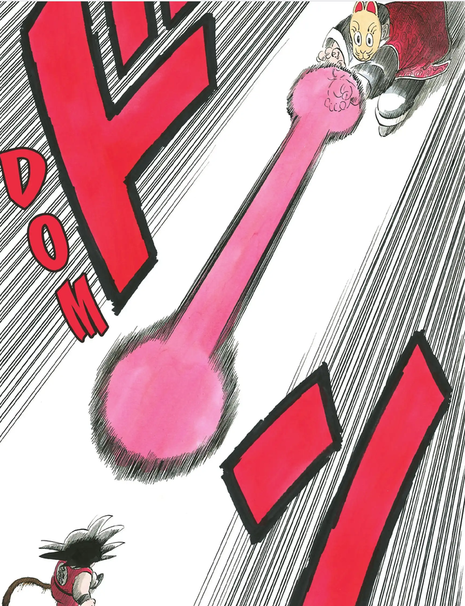
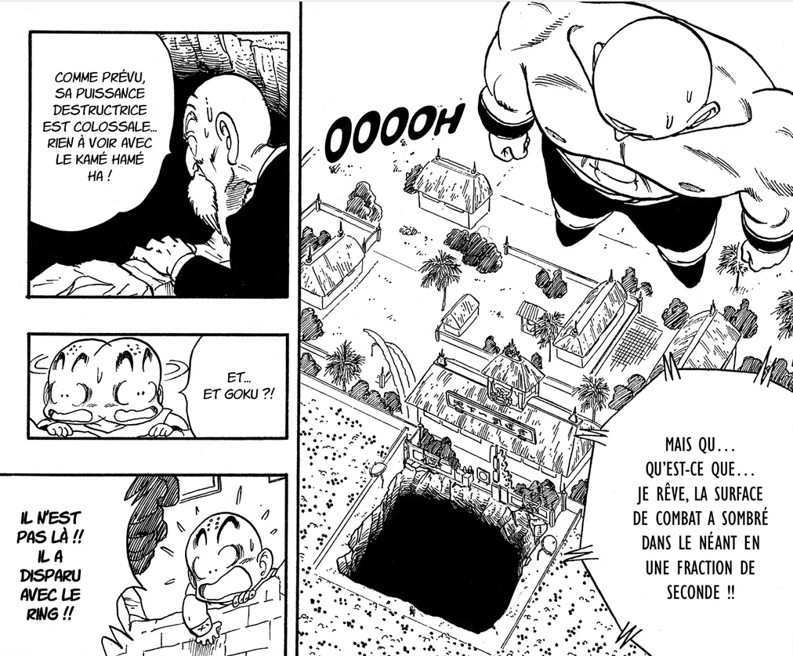
Logiquement, un Kamehameha qui détruit la Lune devrait être infiniment plus puissant qu'un Kikoho qui détruit un ring de quelques mètres carrés. Mais la logique ne s'applique pas entre deux registres. Quand Kamé Sennin détruit la Lune, c'est un gag spectaculaire. Quand Tenshinhan détruit le ring, c'est une mise en scène dramatique. Le Kikoho est présenté comme plus impressionnant, parce que le vocabulaire dramatique a changé. Ce n'est pas la puissance objective qui a monté, c'est le registre narratif qui a basculé.
C'est ce que nous appelons l'amnésie de registre : les exploits du registre comique ne « comptent » plus dans le registre sérieux, parce qu'ils n'ont jamais été pensés comme des données de puissance. Ils étaient des gags.
L'escalade crée aussi des incohérences dans les hiérarchies de personnages. Baba la voyante confirme solennellement que Goku est « le premier humain à avoir le droit de rencontrer Dieu » — personne avant lui, jamais, dans toute l'histoire, n'a atteint ce niveau. Le plafond humain, pendant des siècles, c'était Mutaito, Kamé Sennin, Tsuru Sennin. Aucun d'eux n'a pu accéder au sanctuaire.

Et pourtant, en l'espace de quelques années narratives, Tenshinhan, Krilin, Yamcha — des humains qui s'entraînent avec les mêmes méthodes terrestres — explosent ce plafond sans aucune raison spéciale. Tenshinhan dit à Kamé Sennin de renoncer au combat pour ne pas être humilié. L'élève d'un élève est devenu infiniment plus fort que le maître des maîtres.

La raison est extra-narrative : Toriyama a besoin de compagnons crédibles pour Goku. Si seul Goku progresse, les autres deviennent des spectateurs et le manga perd son casting. Donc tout le monde progresse. Mais la justification interne n'existe pas.
Et puis il y a Mr. Popo. Quand Goku arrive au sanctuaire, Mr. Popo l'écrase totalement. « Tu es faible. Ta force spirituelle est minable, tes techniques sont nulles. » Ce Goku — celui qui vient de battre Piccolo Daimaō — est « minable » aux yeux du serviteur de Dieu. Kami-sama, au-dessus de Mr. Popo, est plus puissant encore.

Toriyama a besoin que le sanctuaire soit impressionnant, que Goku ait encore des paliers à franchir. Mais pour ça, il doit gonfler Mr. Popo et Kami-sama à un niveau qui rend leur inaction passée absurde. Si Mr. Popo est plus fort que Piccolo, et qu'il n'est pas lié à lui par le pacte de mort — pourquoi a-t-il laissé le monde se faire massacrer depuis le sanctuaire ?
Il n'y a pas de réponse. L'escalade crée le spectacle en aval et l'incohérence en amont. C'est le prix de la sérialisation hebdomadaire — et c'est un prix que tous les auteurs de shōnen paient.
9. Le retcon Saiyan — le coup de théâtre qui réécrit tout
Et puis Raditz pose le pied sur Terre.
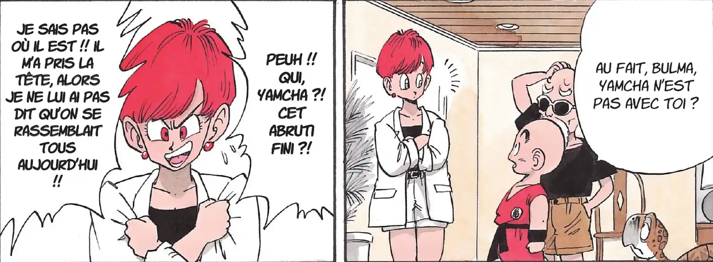
Un jour comme un autre — quelques minutes avant que tout bascule
Tome 17. En l'espace de quelques pages, tout ce que le lecteur croyait savoir sur Goku — un garçon bizarre trouvé dans la montagne par un vieil ermite — est balayé et reconstruit.
« Kakarotto... tu as même oublié tout ça ?! » « Tu es né sur la planète Vegeta !! Tu es un Saiyan !! »
Le coup de théâtre est total. Goku n'est pas un garçon à queue de singe. C'est un guerrier extraterrestre envoyé sur Terre quand il était bébé pour exterminer toute vie. Sa queue, sa force, ses transformations monstrueuses en Ōzaru — tout était là depuis le tome 1. Tout était visible. Et pourtant, personne n'avait vu.
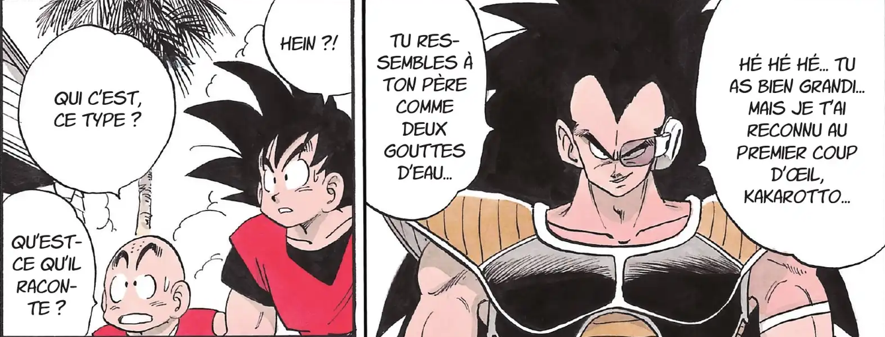
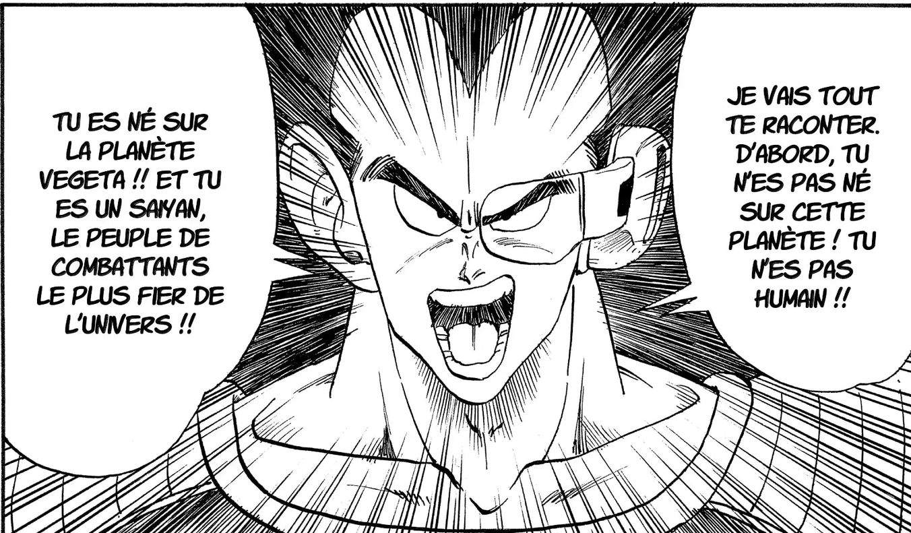
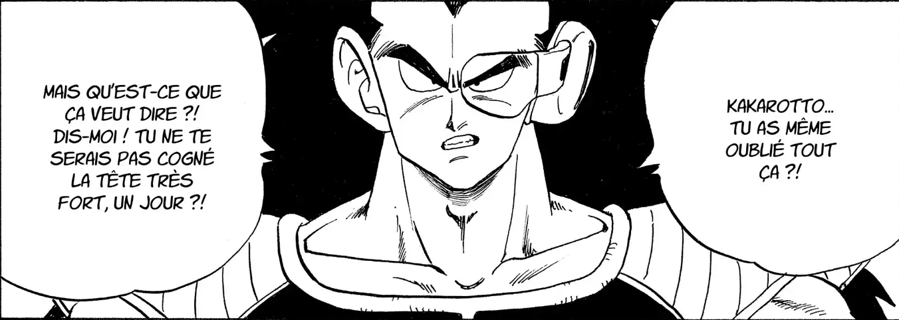
Ce qui rend le retcon Saiyan si puissant, c'est qu'il remplit simultanément les trois conditions du retcon parfait — et ce sont des conditions qui ne se trouvent presque jamais réunies.
Regardez les visages des personnages quand Raditz parle. Krilin, Kamé Sennin, Bulma — ils sont ébahis. Ils apprennent ce que le lecteur apprend, au même instant. Ce choc partagé est essentiel. Dans un roman où le narrateur sait tout, le retcon sent le trucage. Ici, personne ne savait. L'information est neuve pour tout le monde, y compris pour Goku lui-même.
Pourquoi Goku ne sait-il pas qu'il est un Saiyan ? Parce qu'il s'est cogné la tête en tombant d'une falaise quand il était bébé. L'amnésie justifie seize tomes de silence. Et Kamé Sennin, en maître du tisserand qu'il est, complète le dispositif en produisant un faux souvenir : le vieux Gohan lui aurait confié avoir trouvé un bébé au comportement violent, qui s'est calmé après une chute. Une information jamais mentionnée en seize tomes — qui apparaît au moment précis où le retcon en a besoin.
L'arrivée de Raditz est un choc sensoriel. La menace est immédiate, le pouvoir est incommensurable, la mort de Goku est au bout. Le spectacle empêche l'analyse. On ne se demande pas « attends, est-ce que ça colle avec le tome 3 ? » — on est happé. Et quand le calme revient, les coutures ont déjà pris.
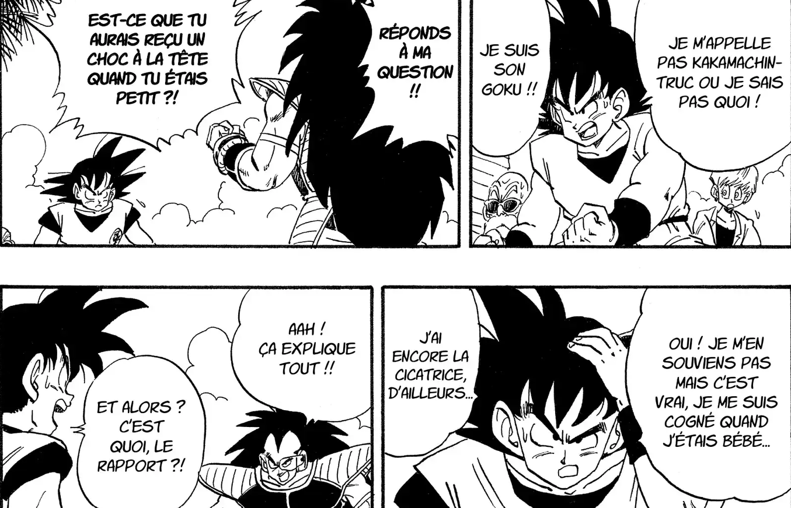
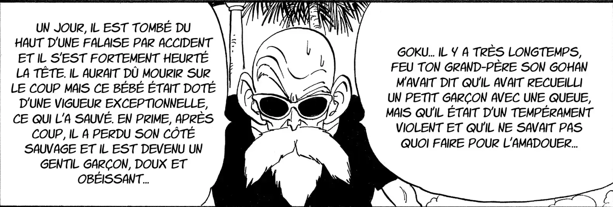
La cicatrice que Goku découvre en la cherchant — et le souvenir que Kamé Sennin invente en le racontant
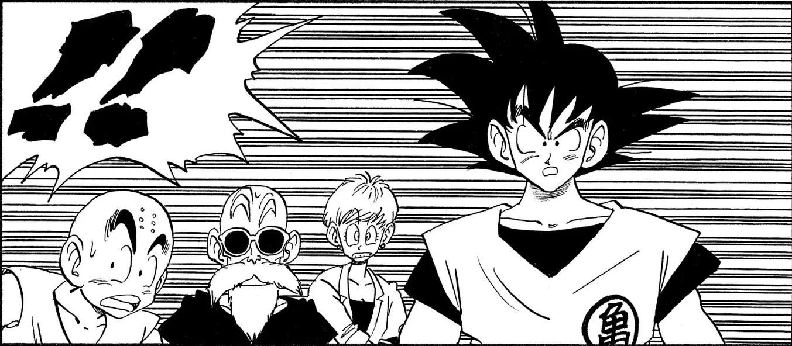
Ce faux souvenir est la pierre angulaire du camouflage. Il transforme le retcon en « révélation » — quelque chose que Gohan savait, que Kamé Sennin savait, mais dont personne n'avait parlé. Le lecteur du premier cercle acquiesce : « Bien sûr, c'est logique, ils gardaient le secret pour protéger Goku. » Le lecteur du deuxième cercle, lui, voit la main du tisserand : cette histoire n'existait pas il y a cinquante pages.
Le retcon qui réactive le passé. Ce que fait Toriyama après l'arrivée de Raditz est tout aussi remarquable. Vegeta, plus tard, donne un « petit cours sur les singes géants » — et soudain, tout le passé de Dragon Ball se réactive. Les flashbacks arrivent. La mort de Gohan, écrasé par l'Ōzaru de Goku bébé, est confirmée. Kami-sama qui arrachait la queue de Goku « parce que c'est gênant » prend un sens nouveau : il savait, au moins inconsciemment, ce que cette queue représentait. La phrase d'Oolong — « un extraterrestre, peut-être ? » — se réalise. Toutes les fausses prophéties de ce qui précède convergent en un point focal unique.
Et Raditz ne se contente pas de révéler l'identité de Goku — il déroule, en une poignée de cases, toute une civilisation qui n'existait pas une page plus tôt.
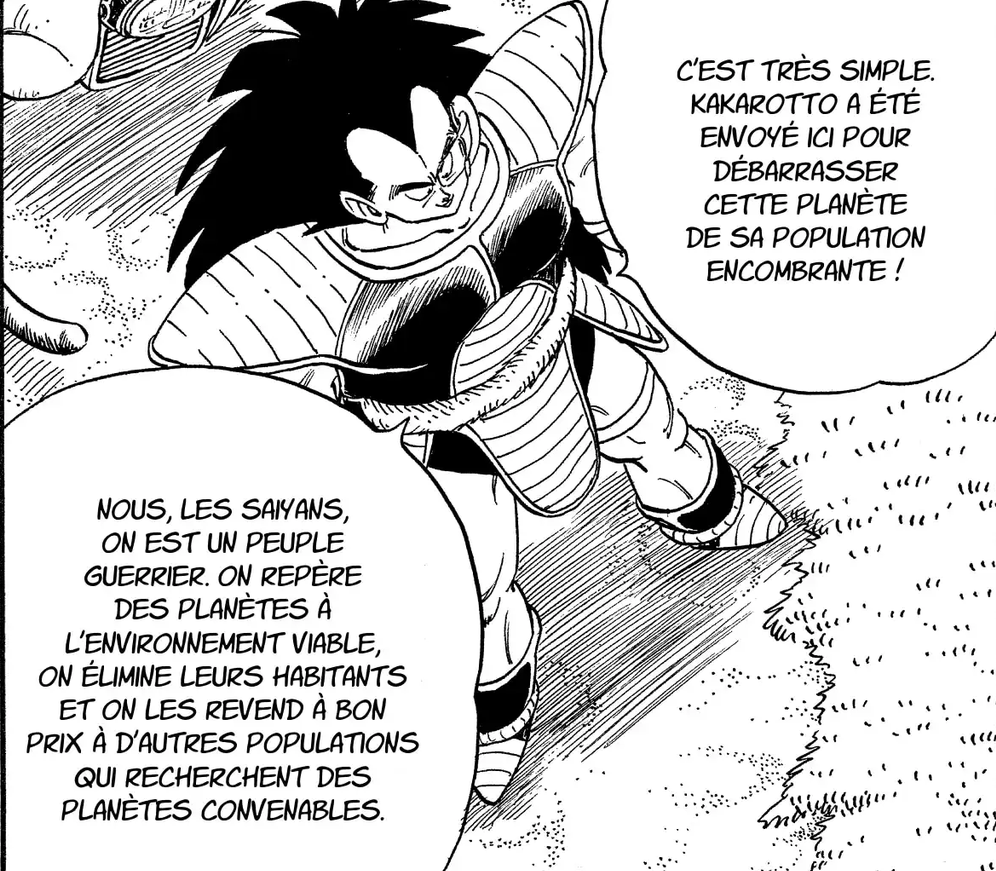
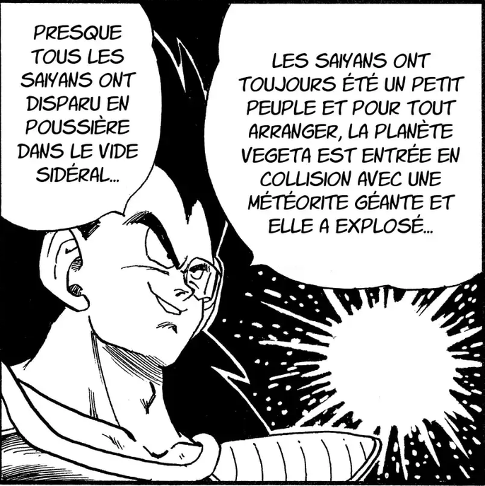
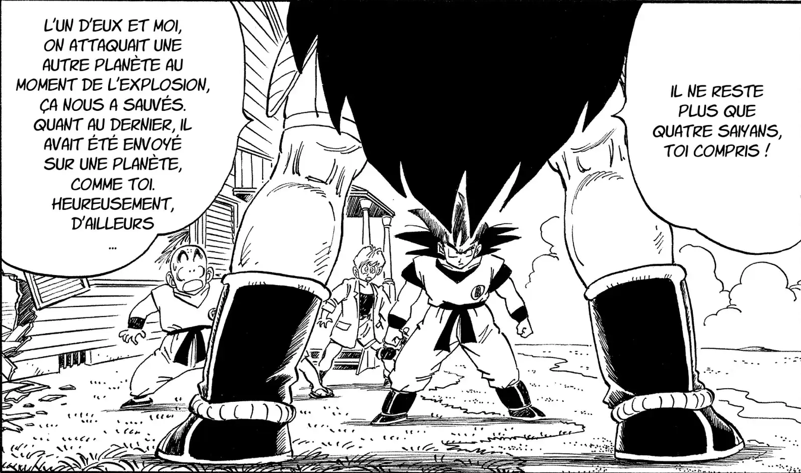
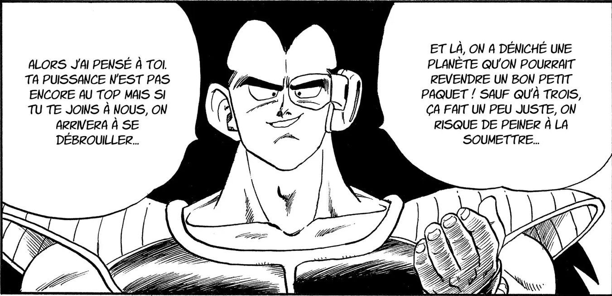
Un peuple, une planète détruite, trois survivants ailleurs dans la galaxie — une mythologie entière, posée en une seule scène
Le passé n'est pas aboli. Il est relu. C'est la puissance spécifique du retcon structurel : il ne supprime pas les seize premiers tomes, il les transforme en prélude.
Et c'est ici que notre voyage dans les dix-sept premiers tomes de Dragon Ball s'arrête — au seuil exact d'un monde nouveau. Le gag manga est devenu un récit épique. Le garçon à queue de singe est devenu un guerrier extraterrestre. Et chaque page que nous avons analysée — le Kinto'un, le Nyoibō, les fausses prophéties, le Senzu, Kami-sama, l'escalade — se reconfigure instantanément sous la lumière de cette révélation.
Le retcon Saiyan est la preuve vivante de la thèse de cet article. Il ne fonctionne que parce que Toriyama n'avait rien planifié. S'il avait su, il aurait semé des indices explicites, et le coup de théâtre aurait été moins violent. C'est l'absence de plan qui fait la violence de la surprise. Et c'est le tissu — seize tomes de fils tissés sans arrière-pensée — qui donne au retcon sa matière première.
Le tisserand n'avait pas de dessin. Mais le tissu, lui, avait un motif.
Épilogue : les deux cercles
Si vous êtes arrivé jusqu'ici, vous avez fait le passage. Vous avez vu les fils, les nœuds, les reprises. Vous savez que le Nyoibō n'a pas toujours été un pilier sacré — qu'il l'est devenu, sous la main d'un auteur qui improvisait à la semaine et qui, en cherchant une solution à un problème immédiat, a trouvé une connexion magnifique avec un objet oublié du tome 1.
Et maintenant, relisez le tome 1.
Le premier cercle est toujours là. Intact. Le bâton est encore magique, le nuage est encore merveilleux, le garçon à queue de singe est encore plein de mystère. Rien n'est abîmé. Rien n'est diminué.
Mais quelque chose s'est ajouté. En regardant Goku tenir son Nyoibō au premier chapitre, vous voyez maintenant le pilier sacré en devenir. En regardant Oolong dire « un extraterrestre, peut-être ? », vous voyez le retcon en embuscade. En regardant Kamé Sennin donner le Kinto'un, vous voyez le fil qui commence — un fil dont le vieux maître ne sait pas encore où il mène.
Vous êtes dans les deux cercles à la fois. Et c'est plus riche, pas plus pauvre.
Le retcon n'est pas le symptôme d'une écriture défaillante. C'est le processus même par lequel un univers sériel se construit. Le comprendre, c'est accéder à un deuxième plaisir de lecture — celui de voir le tisserand au travail. Et le trouver encore plus admirable.
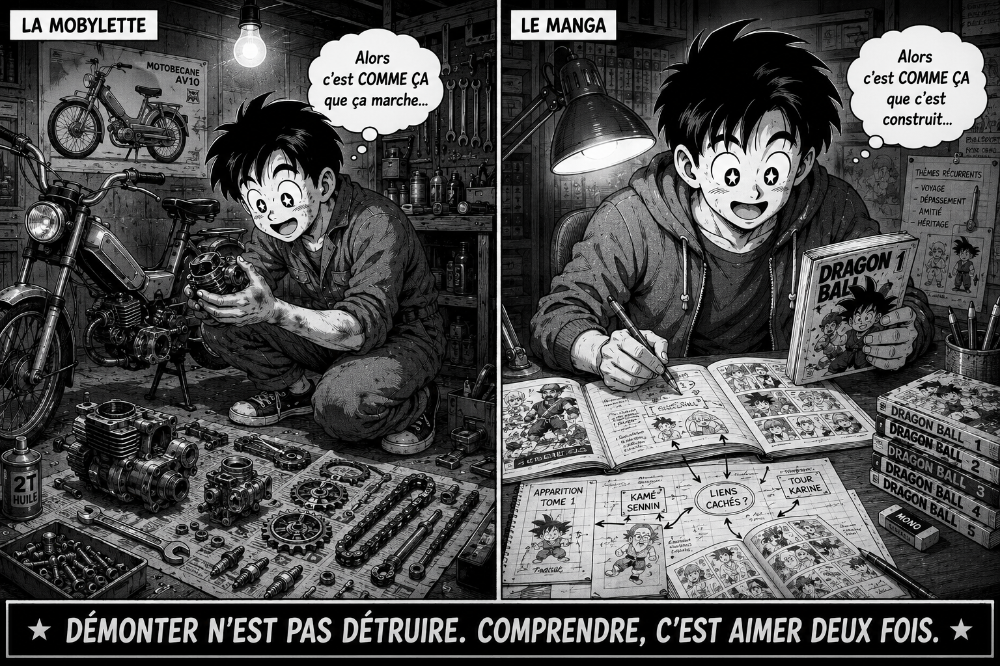
Démonter n'est pas détruire. Comprendre, c'est aimer deux fois.
Parce que l'exploit n'est pas d'avoir tout prévu. L'exploit, c'est de n'avoir rien prévu — et d'avoir construit quand même quelque chose qui ressemble, à s'y méprendre, à un plan.